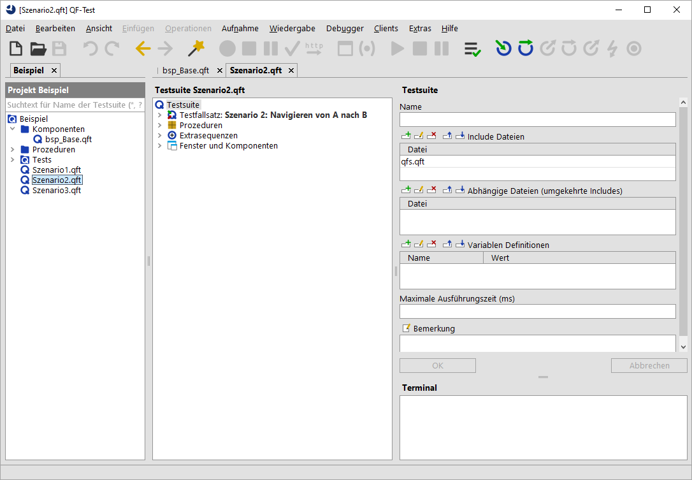

| Version 6.0.3 |
Projekte schaffen einen besseren Überblick, vereinfachen die Navigation zwischen Testsuiten und bieten einen erweiterten Rahmen für Suchen und Ersetzen. Außerdem kümmert sich QF-Test automatisch um die durch Include-Beziehungen oder absolute Referenzen entstehenden Abhängigkeiten zwischen Testsuiten im gleichen Projekt (vgl. Abschnitt 23.1). Viele weitere Funktionen sind bereits implementiert oder in Entwicklung.
Technisch gesehen ist ein Projekt in QF-Test eine Sammlung von Testsuiten mit einem gemeinsamen Wurzelverzeichnis. Es gibt eine 1:1 Beziehung zwischen dem Projekt und seinem Verzeichnis und der Name des Verzeichnisses wird automatisch zum Namen des Projekts.
Ein neues Projekt erstellen Sie über das Menü »Datei«-»Neues Projekt...«. Wählen Sie anschließend das Verzeichnis aus.
QF-Test erstellt darin eine Datei namens qftest.qpj, die das Verzeichnis als
Projekt kennzeichnet. Alle Testsuiten unterhalb dieses Verzeichnisses gehören automatisch
zum Projekt, mit Ausnahme derer, die durch die Option Auszuschließende Projektdateien und -verzeichnisse
ausgeschlossen werden. Abschnitt 37.1.1 führt einige Optionen für Projekte
auf, darunter auch die Ausschlussliste.
Ein Unterprojekt ist ein Unterverzeichnis eines Projekts, welches selbst ein Projekt ist. Testsuiten innerhalb eines Unterprojekts gehören auch zu allen Projekten darüber. Das Projekt einer Testsuite ist das innerste Projekt, zu dem die Suite gehört. Die Automatische Auflösung von Abhängigkeiten umfasst immer das gesamte äußerste Projekt einer Testsuite inklusive aller Unterprojekte.
|
|  | ||
|
| Abbildung 9.1: Die Projektansicht | ||
Die Projektansicht mit ein oder mehreren Projekten wird über das Menü »Ansicht«-»Projekte anzeigen« ein oder ausgeschaltet. Der Projektbaum zeigt die Verzeichnishierarchie eines Projekts mit den Testsuiten, beginnend vom Wurzelverzeichnis. Die Hierarchie kann mit Hilfe des Filters oben am Baum eingeschränkt werden, der sich auf die Namen von Testsuiten bezieht. Ein Doppelklick auf eine Testsuite öffnet diese, ebenso wie ein Druck auf die [Eingabe] Taste. Es können auch mehrere Dateien auf einmal selektiert, oder alle Dateien unterhalb eines Verzeichnisses geladen werden.
Die Hierarchie wird regelmäßig komplett aktualisiert, den Zeitabstand hierfür definiert die Option Zeitabstand für automatisches Auffrischen von Projekten (s). Sie können ein Verzeichnis inklusive seiner gesamten Hierarchie jederzeit manuell über das Kontextmenü oder durch Drücken von [F5] aktualisieren. Um das Verzeichnis komplett neu einzulesen ohne sich auf die Änderungszeiten der Verzeichnisse zu verlassen, was bei großen Projekten deutlich länger dauern kann, drücken Sie stattdessen [Umschalt-F5].
Mit der [F6] Taste wechseln Sie den Fokus zwischen Testsuite und Projektansicht hin und her. Um schnell von der aktuellen Testsuite zu deren Knoten im Projektbaum zu gelangen, drücken Sie [Umschalt-F6]. Falls nötig werden Projektansicht und Projektbaum für diese Aktion automatisch geöffnet.
| Letzte Änderung: 6.9.2022 Copyright © 1999-2022 Quality First Software GmbH |